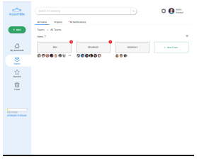
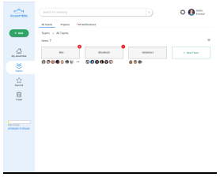
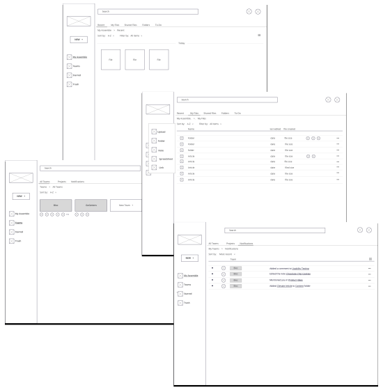
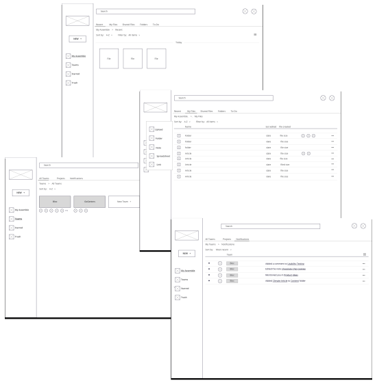

A place to assemble all of your ideas, inspiration and teams.
 

Cloud storage applications is a growing market that people are increasingly reliant on it for both personal and professional use. In 2018 an estimated 3.6 billion people worldwide used cloud storage, up from 1.8 billion people in 2017. With so many cloud storage users, there is an opportunity for a new, updated product to enter the market that resolves frustrations current users experience. Assemble seeks to do this by improving discoverability and giving users the ability to gather all of their file, teams, and inspiration from across the web in one, easy-to-use interface.
DESIGN ROLES
UX Researcher
Content Strategist
Visual Designer
Branding Desiger
UX Designer
DELIVERABLES
Competitive analysis
Survey results
User personas
Branding
Sitemap
Wireframes
Prototypes
TOOLS USED
Sketch
Balsamiq
Maze
UsabilityHub
InVision
For this project, I was tasked with building a cloud storage brand and app that stood out in the saturated market. The client did not have a specific vision in mind for the direction to go and was reliant on me to discover the problems that existed for current users that the competition had yet to address. The research I conducted allowed me to see a pattern of frustrations that users experienced when using their cloud storage app of choice:
I relied on my research and competitive analysis to guide how I would best resolve the frustrations that users faced. The research clued me into users’ current behaviors when using cloud storage applications. The competitive analysis allowed me to understand the strengths and weakness of the competitors in the space, enabling me to see what opportunities existed. Combining the outcome of my research and competitive analysis, I focused on the following as solutions to the challenges my product was to resolve:
To discover how to best position Assemble in the saturated market, I needed to first understand the strengths and weakness of the competitors that already existed in the space. After doing some research and determining Google, Dropbox, and Pinterest were 3 of the most popular, I decided to use them to conduct my competitive analysis.
Favored for its ability to create original content, but the organization of files sometimes felt chaotic with files only being able to be found by using the search feature.

Favored by users who were using their cloud storage for work purposes, but they would often switch to another application when accessing personal files which felt cumbersome.

Appealed to users who wanted to curate photos and visual inspiration from around the web. Lacked the ability to save text-based files or to create their text-based files.
Now that I had an idea of what opportunities existed for Assemble, I needed to determine the best way to design solutions to the challenges I had discovered users faced. To do this, I first had to get to know my users better. What were their preferences, opinions and behaviors as related to cloud storage applications? I used a user survey to gather this information, sending it out to friends, family, subreddit groups and my fellow Bloc students. The user survey focused on the following:
100% of participants used cloud storage for both professional and personal use.

95% of participants were current cloud storage users.
95.8% primarily accessed their cloud storage on a computer screen.
78.9% of participants said it would be helpful to have a separate section for teams.
100% wanted the ability to upload files.
100% wanted the ability to add comments to a file.
85% wanted to receive automatic notifications when a team member commented on a document.
84.2% wanted to be able to create text-based documents.
78.9% wanted team members to have automatic access to all documents in a team folder.
78.9% wanted to be able to upload images.
52.6% wanted to be able to create a to-do list.
With the information gained from my competitive analysis and my user surveys, I was ready to create my user personas, hypothetical archetypes of real users as defined by their goals and frustrations. Building personas would allow me to summarize the patterns I noticed and give them life in the form of fictional users.

DAVID
Entrepreneur, 38 years old
"Being able to automatically see which employee made which edit on documents would save me from asking so many questions."

SARA
Graphic Designer, 33 years old
"My browser usually has over 15 tabs open at any one time so that I can reference images that inspire me."
Keeping the user personas in mind, I created user stories which laid out the highest, medium and lowest priority tasks for users. I focused on the highest and medium priority tasks to create my medium viable product (MVP) which I then mapped out using user flows.

Flow for the user story: "I want to be able to upload or create new content"
After conducting research and creating user stories and flows, I was ready to build the skeletal structure of Assemble with wireframes. To do this, I first put pen to paper and created a basic concept of how Assemble would look and work,
paying attention to what users would see on each screen that would lead them to the desired result mapped out in my user stories. Because 95% of surveyed users reported using their cloud
storage mainly on their computer as opposed to their mobile device, I built a desktop-first design. I then transformed my sketches into wireframes.
I ended up redoing my first iteration after completing user testing and having users
report feeling “overloaded” which was part of
the
challenge I was seeking to solve for in the first place. My second iteration focused on a more simple information architecture, with primary and secondary categories and each screen focused on one particular area.
 

Wireframe sketches were first created and then converted into a lo-fi fidelity prototype using Sketch
I considered two names when building this app but ultimately chose Assemble because it directly conveyed the action that users would take when using the application: to assemble files, teams, and links. It applied to both the personal and
professional user and, a verb, Assemble elicited the emotional response in users to be active in using the platform. It was also a name no other company was using in the market.
After deciding on the name, I worked on designing a
logo. Although I had an idea of the direction I wanted to go, the first step I took in creating the logo was to complete a mind mapping exercise. This allowed me to fully lay out the emotions central to Assemble that I wanted users to
feel
when seeing the logo.
To keep the branding clear, all of the logo iterations I created played on the idea of people/ideas coming together around a cloud where all their information would be stored. I used a preference test to help me
decide which logo iteration to use. The one that was ultimately chosen was created by using golden ratio circles. It was chosen because it was simple, straightforward and cheerful; it also received the most positive reactions from
users when tested.


1. Mind-mapping branding exercise
2. Preliminary logo sketches
3. Perfecting the logo design using golden ration circles
When deciding what color palette I wanted to use, I first considered the emotions I wanted users to feel: trustworthy, calm, creative and successful. With this in mind, I chose a color palette that included blue, green, purple, white and
gray. I wanted the tones to be vibrant enough to keep the user engaged and uplifted, but soft enough to create a sense of ease and calm.
I chose blue as the primary color because it evokes the emotions of serenity, trustworthiness, and
intelligence. Blue puts the user in a peaceful state making it an ideal color to follow the user throughout their flows with its calming influence lending to them be able to be more productive.

When choosing the typography, I focused on finding a typeface for the logo and primary text which matched the logo’s rounded shapes and which was easily legible. I chose Open Sans for the primary typeface for its clean, well-balanced,
rounded geometric shapes.
For the logo, I chose Montserrat which matches Open Sans’ rounded shapes and has an elegant simplicity and character that makes it stand out.
Montserrat Medium for the logo
Open Sans SemiBold for H1 text
Open Sans Normal for H2 text
I wanted to use illustrations on my homepage to convey the concepts of Assemble in a way that was informative and fun. To make the illustrations, I used several different vector illustrations from freepik.com.


An example of a freepik.com illustration I used to create my own illustration
Keeping in mind my branding, it was time to put the skin on my wireframes and make them fully come to life.
Using my high fideltiy prototype, I conducted scenario-based usability tests in-person and virtually to assess the product’s usability and the user’s preferences towards specific pages. I then took the findings and made changes to my design.

When I gave users the task of sorting files, the majority didn’t see this at first and tried to click on the “Name,” “Last Edited” or “File Created.” Based on this, I changed it so that users could sort by clicking on the words, with an arrow showing the direction they’re sorted by (A - Z, First to Last).
“To-Do” was a feature I held on to until the end, but ultimately decided to remove based on extensive user feedback. While in my survey, participants stated they would like a to-do functionality, when testing the product users reported that they wouldn’t use a to-do section, citing it “unnecessary.” I tried different iterations but keeping in mind one of my goals of keeping the interface simple, I ultimately decided to remove it.
UPLOADING A FILE

When going through the task of uploading a file, users reported that they did not find it ideal for it to take over the entire screen, disabling them from doing anything while files uploaded. They also wanted to be able to to open their newly uploaded files without having to search for it. With this feedback, I iterated on the uploading process. Users responded to the new iteration very positively.
EXITING OUT OF AN OPENED FILE


When given the task of opening a file and then canceling out of it, users always took a noticeable amount of time when the prompt was to click “close.” While I thought the “close” would be very obvious and clear, users reported that their eyes remained at the top where the other text was so it was hard to see. For this reason, I changed the prompt to a back arrow. Testing proved this to be a positive change as users completed the task much quicker across the board.
A/B TESTING

preferred a blue hover when making a selection.

preferred a shadow hover when making a selection.
After designing over 200 screens and deciding to completely scratch one design for another, I had my MVP.

This was my first full design project and it was an incredible learning experience. These are the biggest lessons I learned:
Stick to the challenges you are trying to resolve and don’t try to tackle everything.
Going into this project, I was uncertain of what direction to take, and the open-ended client brief didn’t help. I wanted to create a “perfect” product, and I wrongly thought that I could only do this by having it tackle ALL the problems that existed. By trying to address all of the problems, I lost sight of the original challenges I was designing for.When you’re feeling stuck, review your research and personas. Don’t fall into the trap of getting yourself unstuck by merely going with what you think is best. All decisions need to be rooted in research, with empathy for your users.
Several times I found myself designing based on what I thought was best, only to review my research and realize I needed to go in a different direction. This cost me a lot of time and frustration.Test every iteration, no matter how tedious. Don’t assume your latest iteration is the best one. But know when to move on as well.
There were several times when I found myself iterating on a feature so many times that I lost track of both my original goal and valuable time.Make sure your user flows represent the MVP of your product.
I made the mistake of creating flows that were a high priority but weren’t the flows that made my product unique. Going forward I will make sure that the flows I create are the ones that directly display what makes my product stand out from the competition.Be inspired and learn from others but don’t let it completely change your direction every time.
There were several times where I would see someone else’s project, and it would cause me to change what I was working on completely. The main problem for this is that I didn’t know what their project was solving for, which often meant I would design something that did not work for the frustrations I was designing for.